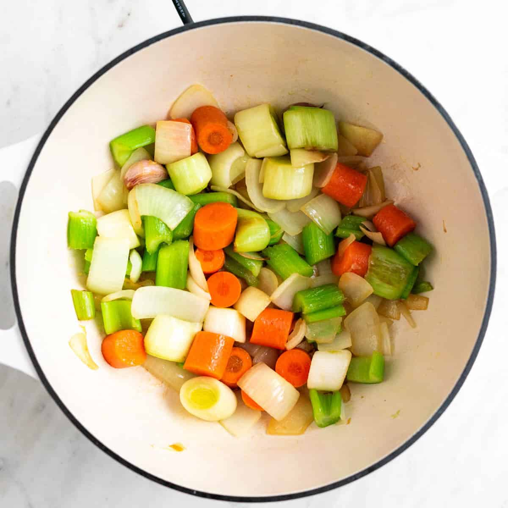
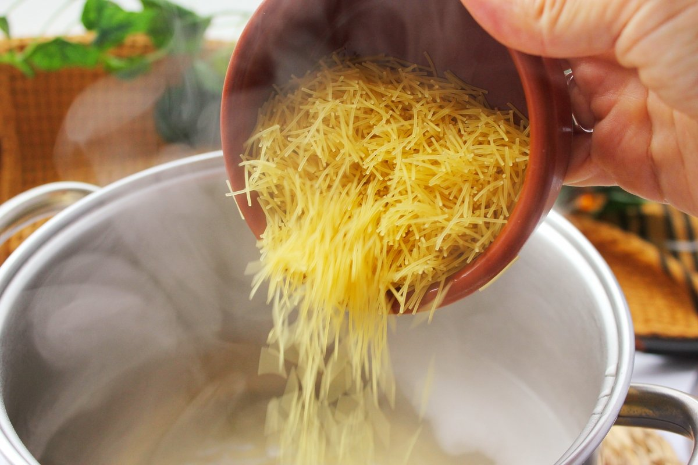
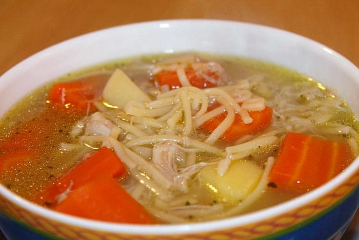
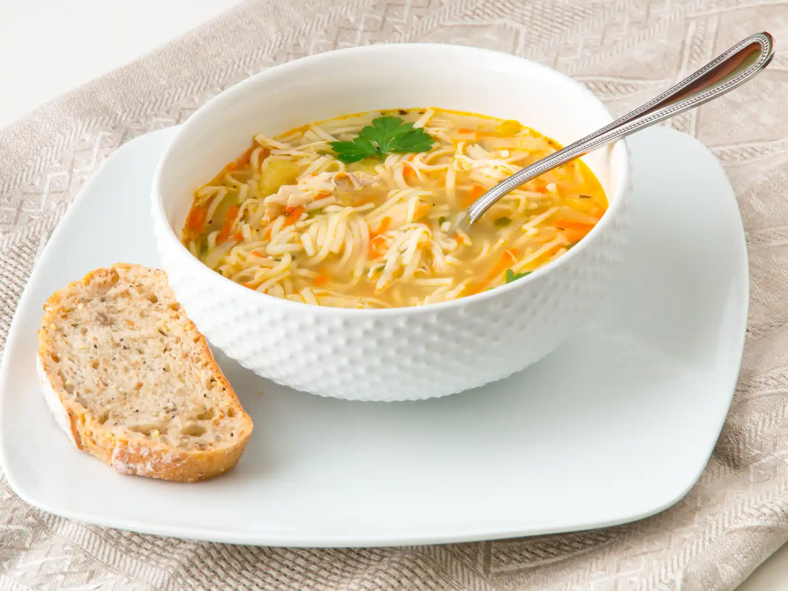

Tornar a l'inici
Sopa amb fideus - Primer plat
Ingredients
- 1 litre de brou de verdures o pollastre
- 100 g de fideus
- 1 pastanaga tallada
- 1 porro tallat
- Sal i pebre al gust
Pas a pas
- Escalfar el brou i afegir-hi 1 pastanaga i 1 porro tallats. 
- Quan el brou bulli, afegir 100 g de fideus i coure durant 8-10 minuts. 
- Rectificar de sal i pebre i servir calent. 
Resultat final
Aquí tens el plat llest per servir:

Tornar a l'inici de la recepta